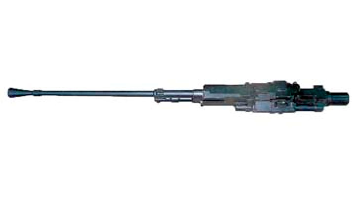

Авиационный пулемет А-12,73
За решение задачи повышения скорострельности пулемётного вооружения Николай Михайлович Афанасьев взялся достаточно давно, когда после окончания техникума механизации сельского хозяйства в 1939 году был призван в армию и оказался на Дальнем Востоке в группе советских войск в Монголии. Там, ознакомившись с пулемётом знаменитого конструктора В. А. Дегтярева, взялся его усовершенствовать с целью повысить скорострельность. Он стал разрабатывать проект двуствольного скорострельного пулемёта с оригинальной для того времени конструктивной схемой, в которой откат от действия отдачи первого ствола обеспечивал перезаряжание второго. Армейские специалисты оценили перспективность проекта и доложили руководству группы войск. По указанию легендарного командующего Г. К. Жукова Николай Михайлович командируется в Москву, а оттуда направляется в конструкторское бюро подмосковного Научно-исследовательского полигона стрелкового и минометного вооружения (НИПСМВО). Но его работа над проектом оказалась непродолжительной - началась Великая Отечественная война, и в сентябре 1941 г. Афанасьев добровольцем отправляется на фронт. Он принимает участие в обороне Москвы, в освобождении города Михайлова. В феврале 1943 г. Николай Михайлович Афанасьев отзывается из действующей армии для работы в КБ полигона. Там он побеждает в конкурсе по разработке предохранительного механизма от двойного заряжания для 82 и 120-мм миномётов. Этот механизм отличался 100 % надёжностью и стал первой внедрённой разработкой, принесшей славу Н. М. Афанасьеву.
После окончания войны Н. М. Афанасьев демобилизуется и начинает работу в миномётном КБ Б. Н. Шавырина. В феврале 1948 г. он переводится в Тульское ЦКБ-14 и возвращается к разработкам стрелково-пушечного вооружения (СПВ). Здесь в полной мере раскрылся его незаурядный конструкторский талант. В этот послевоенный период проблема повышения скорострельности авиационного СПВ особенно обострилась в связи с появлением реактивной авиации. Для авиационного СПВ вопрос повышения скорострельности всегда был одним из самых приоритетных. К середине 1940-х годов, когда главенствующее место в вооружении авиации заняли автоматические пушки, отечественным конструкторам удалось создать широкую гамму пушек с темпом стрельбы порядка 600 выстр./мин. Однако повышение скорости летательных аппаратов требовало дальнейшего увеличения скорострельности авиационного вооружения.
Над этой проблемой на конкурсной основе работали конструкторские бюро Б. Г. Шпитального (ОКБ-15), А. Э. Нудельмана (ОКБ-16) и Тульское ЦКБ-14, возглавляемое И. Ф. Дмитриевым. Первые попытки конструкторов были направлены на интенсификацию функционирования автоматики образцов уже состоящих на вооружении. Такую попытку на пулемете УБ-12,7 предпринял М. Е. Березин. Были попытки модернизировать пушки Б-20 и ВЯ. Однако при этом возникли сложные проблемы обеспечения живучести основных деталей автоматики. Стало очевидно, что выполнить новые требования по скорострельности и комплексно решить все проблемы можно только на основе принципиально новой схемы, позволяющей сократить время цикла работы автоматики, не повышая уровень её кинетической энергии. Именно такую схему автоматики для оружия газоотводного типа предложил Н. М. Афанасьев в 1949 году, разрабатывая проект 12,7-мм скорострельного авиационного пулемёта ТКБ-481 с темпом стрельбы не менее 1500 выстр./мин. для вооружения бомбардировщика Ту-4. Главной особенностью предложенной схемы было наличие рычажного ускорительного механизма досылания ударного типа, обеспечивающего подачу очередного патрона из ленты в патронник и извлечение стреляной гильзы при ходе ведущего звена существенно меньшем, чем длина патрона (0,8 длины патрона) за счёт большего хода относительно лёгкого досылателя. Это дало возможность в 1,5-1,8 раз повысить темп стрельбы без увеличения скорости ведущего звена автоматики.
В схеме автоматики, предложенной Афанасьевым, имеется несколько принципиальных моментов, требующих пояснения. Автоматика оружия построена на использовании энергии газов, отводимых из канала ствола через боковое отверстие в его стенке. Ведущим звеном является затворная рама с газовым поршнем в которой размещён рычаг-ускоритель, выполняющий функцию досылателя патрона и экстрактора (выбрасывателя) стреляной гильзы.
Затвор вертикальный клиновой, перемещается в пазах ствольной коробки и приводится в действие движением затворной рамы только на участке отпирания и запирания, что обеспечивает снижение потерь энергии ведущего звена, при этом непосредственная связь между затвором и патроноподающим механизмом отсутствует. Опорная плоскость затвора наклонена по отношению к вертикали на 5°, что обеспечивает уменьшение потерь энергии ведущего звена на преодоление сил трения при раннем отпирании затвора на 57 %.
Ударный механизм размещён внутри затвора, при этом направление движения ударника почти перпендикулярно оси канала ствола. Поворот ударного импульса от ударника к капсюлю патрона обеспечивается вращающейся лодыжкой в затворе. Взведение пружины ударника осуществляется при закрывании затвора, а его снятие с боевого взвода производится электроспуском незадолго до прихода затвора в крайнее верхнее положение.
Досылание патрона из ленты в патронник прямое, осуществляется двухсторонним ускорительным механизмом при его взаимодействии с неподвижным копиром в ствольной коробке. Страгивание патрона из ленты при его досылании осуществляется всей массой подвижной системы при её относительно небольшой скорости в начале наката. Затем, после того как патрон вместе с подвижными частями автоматики приобретёт некоторую скорость, ускоритель с досылающим рычагом присоединяется к копиру в ствольной коробке и начинает поворот, скорость патрона резко увеличивается (ил. 5). Но при этом не происходит жёсткого удара досылающего элемента по находящемуся в покое патрону, что наблюдается в большинстве одноствольных систем! Это уникальная конструкторская находка Афанасьева позволяет исключить потерю энергии и скорости разогнавшихся в накате подвижных частей (а значит и темпа) на непроизводительный удар по находящемуся в покое патрону, уменьшает вероятность инерционной деформации патрона (т. н. «воротника»), увеличивает живучесть подвижных частей.
Механизм подачи ленты ползункового типа с приводом от затворной рамы. Система имеет правое и левое питание, перемена направления подачи ленты осуществляется перестановкой деталей патроноподающего механизма на другую сторону оружия. Перезаряжание осуществляется при помощи агрегата пневмоперезарядки. Торможение подвижных частей при откате осуществляется мощным пружинным буфером из сдвоенных пружин, размещённых одна в другой.
Первые испытания пулемёта Афанасьева, показали работоспособность предлагаемой схемы и возможность обеспечения высокого, для того времени и калибра оружия, темпа стрельбы в 1500 выстр./мин. В сентябре 1953 года 12,7-мм авиационный пулемёт ТКБ-481 конструкции Н. М. Афанасьева в вертолётном варианте под сокращенном наименованием А-12,7 был принят на вооружение ВВС. При этом достигнутый темп стрельбы 1500 выстр./мин. был принудительно снижен до 1000 выстр./мин. путём введения специальной схемы замедлителя в электроспуск. Снижение темпа было вынужденной мерой и предпринято из эксплуатационных соображений. Дело в том, что пулемёт обеспечивал темп стрельбы, превосходящий возможности металлургии тех лет в обеспечении живучести стволов -стволы быстро «сгорали». Попытка применить в конструкции ствола лейнер из высоколегированной тугоплавкой стали к успеху не привела, пришлось понижать темп.
В 1966 году был принят на вооружение модернизированный пулемет А-12,7А, доработанный по газовому двигателю и тракту конструкторами О.Д.Леошкевичем, Б.П.Курдиным, А.С.Неугодовым. Доработка пулемета была произведена с целью обеспечения возможности стрельбы наряду со штатными патронами новым 12,7-мм патроном с зажигательной пулей мгновенного действия большой чувствительности (ЗМДБЧ).
Пулемёт А-12,7 стал одним из самых долгоживущих образцов отечественного автоматического оружия. Он выпускался на Ковровском механическом заводе (КМЗ) в течение 30 лет, до 1983 года включительно! Этим пулемётом вооружались вертолёты Ми-4, Ми-6, самолёты Ан-2, Як-18, МиГ-17У, МиГ-19У, МиГ-21У. Но в качестве оборонительного вооружения перспективных бомбардировщиков пулемет А-12,7 к моменту принятия на вооружение уже не годился.
| Модификация | А-12.7 |
| Калибр, мм | 12.7 |
| Тип автоматики | Газоотвод |
| Масса тела орудия, кг | 25.5 |
| Длина, мм | 1423 |
| Длина ствола, мм | 1005 |
| Темп стрельбы, выстр/мин | 1100 |
| Начальная скорость пули, м/с | 840-860 |
| Емкость магазина | лента |
| Масса снаряда, г. | 38.25 - 55.5 |
| Тип боеприпаса | 12,7х108 мм |